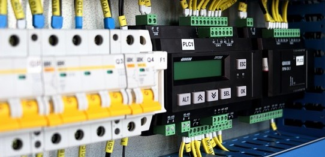
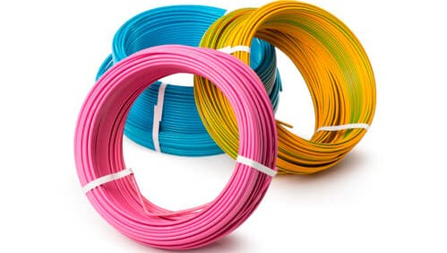
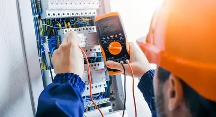

A Elmiro Soluções atua em manutenções elétricas preventivas e corretivas, e na realização de dimensionamentos e trocas de cabos.
Com anos de experiência em sistemas bifásicos e monofásicos atuando no estado de São Paulo, chegamos agora a Barra do Ouro TO, onde realizamos atendimentos na cidade e regiões circunvizinhas.
Nossa meta é prestar-lhe um excelente serviço.
Fique a vontade para nos chamar a qualquer momento através dos botões de contato acima.
SEGUE ABAIXO ALGUNS DE NOSSOS SERVIÇOS, SEGUIDOS DE BREVES EXPLICAÇÕES.
Instalação de quadro de distribuição (QDC)

O QDC deve ser instalado em local estratégico e de fácil acesso, permitindo agilidade caso necessário para a realização do desarmamento forçado de um ou mais dos disjuntores em caso da não atuação. Ou em pequenas manutenções na parte elétrica como uma simples troca uma lâmpada, para que seja realizada de maneira segura e correta, evitando contatos acidentais com partes energisadas do circuito.
Dimensionamento de circuitos
Ainda com base na imagem acima, após o QDC ser instalado em local extratégico e seguro, os disjuntores e cabos devem seguir as normas da NR10 para evitar superaquecimento e incêndios no sistema elétrico, garantindo assim a segurança de todo o circuito elétrico e de seus usuários.
Muitos cabos comercializados não tem a espessura de cobre que diz ter, por isso aquece facilmente. Por outro lado disjuntores com curvas e amperagens maiores podem não desarmar nesta situação, permitindo a queima do cabo e do circuito inteiro. Algo parecido acontece com emendas mal feitas.
Outro problema surge quando o "profissional" escolhe disjuntores com amperagens e curvas com capacidade abaixo do suportado pelos cabos, assim o cabo não aquece mas o disjuntor desarma o tempo todo detectando um falso aquecimento.
Individualização de circuitos
Além dos disjuntores principais, é necessário que haja mais disjuntores no QDC, isso é o que torna possivil utilizar um ou dois disjuntores para formar um circuito evitando sobrecarga, o que também faz parte do dimensionamento já citado. Além disso tendo cada circuito seus próprios disjuntores, é possivel realizar pequenas ou grandes manutenções, com parte do circuito interrompido enquanto outra parte permanece energizada.
Podemos invidualizar qualquer circuito. Os principais são, chuveiros e torneiras elétricas, tomadas 127V, tomadas 220V, lampâdas, lavanderia, piscina ou outras partes da casa. Podemos ainda repetir as individualizações em cada andar construido.
Instação de dispositivos de proteção - DPS e DR.
O DPS, é um dispositivo de proteção contra surtos, o qual protege os equipamentos de raios e picos de tensão. Já o DR, diferencial residual, é um item idispensavel de proteção a vida, pois reconhece fuga de corrente ocasionados por choques, e desliga instantaneamente o sistema elétrico.
Dimensionamento/troca de cabos.
Além de se fazer necessário o dimensionamento correto como tratado anteriormente. Alguns cabos podem estar comprometidos como no caso dos cabos rigidos obsoletos, encontrados em inslações antigas, fazendo-se necessário sua substituição por cabos flexiveis com bitolas apropriadas.
Além disso podem haver cabos cortados, queimados ou com muitas emendas na instalação, podendo ocasionar superaquecimento e vir a gerar incêndio como já citado.
Inspeção elétrica
A inspeção é realizada para identificar problemas atuais ou prevenir contra problemas futuros.
Outros serviços
Também realizamos pequenas intalações ou trocas de itens como, disjuntores, cabos, chuveiros, torneiras elétricas, lâmpadas, tomadas, interruptores, sensores de presença, campainhas e muito mais.